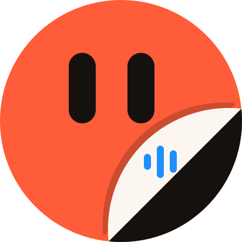
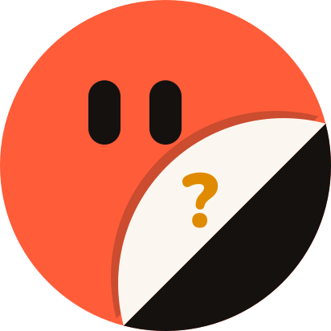

Kofi is speaking
During a huddle the Desk Dotlet becomes the face of whoever holds the mic: their character colour, their eyes, sound bars on the peel. Tap the screen to raise your hand; press and hold to mute.
 Between calls:
Between calls:the Lead's status

A Dotletneeds your yes